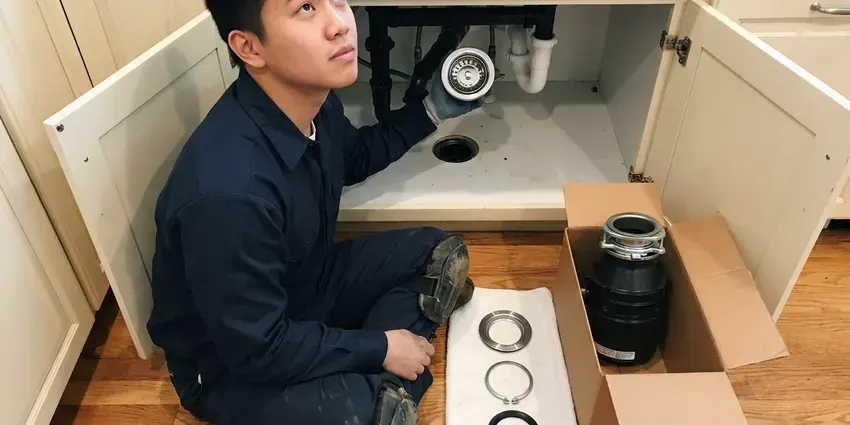
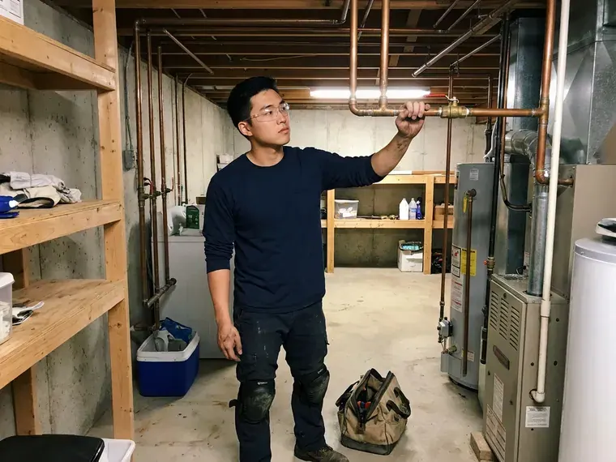

Garbage Disposal Repair in Newark, OH
HRL Plumbing fixes InSinkErator, Waste King, Moen and other disposals in Newark, OH homes with honest advice on repair versus replacement.
- Insured, Licensed Techs
- Leak Tested Before We Leave
- Guaranteed Labor
- Same-Day Disposal Repair
Disposal Humming or Leaking in Newark, OH?
If the unit is past saving, we tell you and quote a replacement on the spot.
Garbage Disposal Repair in Newark, OH
HRL Plumbing sees plenty of disposal trouble in Newark kitchens from celery strings, grease and scale in the grinding chamber. Jams usually clear fast. With the right hex key and a pair of long pliers, most jams and flange leaks get fixed in under an hour without pulling the unit off the sink.
Some of what we do:
- Clear clogged disposal drains and trap arms
- Clearing stubborn disposal jams
- Tracing switch and wiring faults

Additional Kitchen Plumbing Services in Newark, OH
Our kitchen plumbing services in Newark, OH cover sinks, disposals, dishwashers, and grease traps so your kitchen stays clean, safe, and fully functional.


Garbage Disposal Installation in Newark

Customers
Why Choose HRL Plumbing for Garbage Disposal Repair in Newark, OH?
Plumbing systems in Ohio vary from old galvanized to new PVC, and the pipe changes how we fix the disposal. Old pipe can be the real problem. A disposal that drains slowly in a home with galvanized drains often has a narrowed branch line, so we check the line before blaming the unit.
- Fast Response, Same-day disposal visits happen on most weekdays.
- Trained Plumbers, Our plumbers repair every major disposal brand and most of the minor ones.
- Housing Know-How, We know how water quality and house age affect a disposal's life.
Citywide Coverage
Every neighborhood in Newark is covered for disposal repair, from new subdivisions to older homes close in. We are usually close by. That keeps response times short, and it means a jammed disposal does not have to sit full of water overnight while you wait for a plumber.
Experienced Team
Our plumbers have repaired disposals of every age and brand. They can hear a bad bearing. A rough hum, a high whine or a clunk at startup each points to a different part, and that ear saves time on the diagnosis and money on your bill.
Safety-First Approach
Every disposal repair starts with the power off at the breaker or plug. Hands stay out of the chamber. Pliers and a hex key clear the jam, the maker's guidelines are followed, and we show you how to free a simple jam safely next time.
Trusted Certified Newark Plumbing Services Professionals
At HRL Plumbing, we take pride in licensed, certified plumbing services throughout Newark, OH. Credentials matter in this trade. Every repair, install and maintenance visit follows strict safety and quality rules, and the plumbers doing the work carry recognized industry credentials.
Call Us Now PHCC Plumbing Contractor Recognition
PHCC Plumbing Contractor Recognition Better Business Bureau (BBB) Accreditation
Better Business Bureau (BBB) Accreditation Angi Certified Pro
Angi Certified Pro ISO 9001 Quality Management Certification
ISO 9001 Quality Management CertificationDisposal Repair in Newark, OH: The Details
Electrical Issues and Motor Repair in Newark
A disposal that hums but will not grind has power but cannot turn, while one that is silent has no power at all. The two need different fixes. We check the breaker, the reset button and the switch for silent units, and the flywheel and motor windings for humming ones, then decide if a repair makes sense.

Electrical Problems and Resetting in Newark
No hum at all usually means no power reaching the motor. We start at the red reset button on the bottom, then check the breaker, the wall switch and the outlet or junction box under the sink with a meter. Cabinets are damp places. Corroded wire nuts and loose cord connections are common in that damp space, and we replace them rather than just tightening them back down.
Humming Disposal Repair in Newark
Humming with no spin usually means something is stuck. Bones, pits, glass and spoons are the usual suspects. With the power off, we free the flywheel using the hex socket underneath, pull the object, and test the motor and reset with water running.
Emergency Disposal and Sink Backup Repair in Newark
When a disposal fails, water can back into the sink and the dishwasher. With water rising or on the floor, turn off the disposal and dishwasher and call, because running them only adds water to the cabinet. We move quickly on these.
Disposal Odor and Buildup Cleaning in Newark, OH
Food buildup and grease on the chamber walls and under the splash guard are behind most disposal odors. Homeowners around Newark often install a softener to protect water heaters and cut down on spotting on fixtures. Mineral scale traps the food. Cleaning the guard and chamber, checking the drain and swapping a torn guard often solves a smell that lemon peels never fixed.
Jammed Disposal Repair in Newark
A jam usually comes from one hard object, like a peach pit, a chicken bone or a twist tie wrapped around the impeller. We free the flywheel from below with the hex key and pull the object with pliers, never a hand, then run it with water to make sure nothing else is stuck. We press the reset after clearing it. Repeat jams point us to the trap arm.
Slow Draining Disposal Repair in Newark, OH
Good grinding but slow draining usually means the discharge tube or the trap arm is packed. Rice and coffee grounds are the usual culprits. The trap comes off, the tube and arm get cleared with a properly sized cable, and we confirm the arm drops about a quarter inch per foot.

InSinkErator and Other Brand Repairs in Newark, OH
Every brand, from InSinkErator to Waste King and Moen, mounts differently, so a flange leak is fixed with that brand's kit. InSinkErator uses a three-bolt or Quick Lock style ring, while Waste King uses an EZ Mount twist ring that comes off without tools. Common kits ride on our trucks. That keeps most repairs to one visit.
Garbage Disposal Repair Near Me in Newark, OH
When your disposal quits, a plumber close by makes all the difference. Our team works in Newark every day. We usually arrive the same day with common parts and a couple of replacement units in case the old one is past fixing.
Out-of-town outfits can take days. Our local plumbers know the housing and drain types common in Newark, so they show up with the right adapters and know what to expect behind the cabinet wall.
HRL Plumbing at a Glance
- Licensed and insured plumbers serving Newark, OH
- Same-day appointments and 24/7 emergency response
- Clear written estimates, no hidden fees
- 4.9-star rated by 673+ Ohio customers
Newark Map
Newark Information
- Population
- 51,046
- Area codes
- 740/220/614
- Service area
- Newark and communities within 40 miles
- Nearby
- Columbus, Dublin, Mansfield, Springfield
Homeowners around Newark often install a softener to protect water heaters and cut down on spotting on fixtures. Inside a disposal, that scale builds on the grinding ring and the splash guard and wears the unit out sooner in Newark homes.
Expert Services
Reach out to HRL Plumbing for honest, reliable plumbing from people who know the trade in Newark, OH.
Our Specialized Plumbing Services in Newark, OH
At HRL Plumbing, we handle the full list of plumbing services across Newark, OH. From leak detection to full system installs, our team works fast and charges fair prices on homes and commercial properties alike. Explore our core services below:


Our Garbage Disposal Repair Routine in Newark, OH
A disposal repair usually runs the same way.
Call Us
Call (740) 449-7505 and describe the hum, leak or silence. We set a time that works for you.
Diagnose and Price
A licensed HRL Plumbing plumber checks power, reset, jam and motor in that order and gives you a flat price.
Make the Repair
Once you approve, we fix it with genuine parts and the manufacturer's specs.
Frequently Asked Questions About Garbage Disposal Repair in Newark
It depends on what failed. Clearing a jam usually runs $100 to $200, while a flange reseal, switch replacement or electrical repair tends to land between $250 and $500. We quote before starting.
At ten years or older, replacement is usually the better spend. Frequent leaks, a failing motor or a repair that costs half the price of a new unit all point to replacement, while a young unit with a jam or a loose flange is worth fixing in your Newark home. We give you both numbers.
Hard and stringy food are the biggest causes. Bones, pits, celery, corn husks and non-food items jam the impellers, and running hot water with grease coats the chamber and lets scale build faster in hard water areas. Surges can damage the motor too.
Minor repairs usually do not need one. A jam or seal repair is routine, while new wiring or changes to the drain may require a permit in some areas. Our plumbers know the local rules.
Yes. HRL Plumbing stands behind every disposal repair with a parts and labor warranty. If the same issue returns while the warranty is active, we come back and fix it without a labor charge. You get the terms in writing.
InSinkErator, Waste King, Moen, GE and KitchenAid are all brands we fix, along with most others.
Use cold water while grinding, and run the unit every few days even if there is little in it, which keeps the impellers moving and helps prevent rust. Feed scraps in slowly instead of packing the chamber, and keep grease, fibrous foods and coffee grounds out of it. Citrus peels help the smell.
Clearing a jam with a hex key or pressing the reset is safe with the power off. Persistent leaks, electrical problems or motor issues are a different job, and they are safer and quicker for a plumber to handle. Keep your hands out of the chamber.
What Our Customers Say About Our Plumbing Experts

Greg S.
I manage a small strip center with six tenants. HRL Plumbing handles our annual backflow testing and fixed a recurring clog in the shared sewer line that had been backing into the nail salon. Their reports come in clean and on time.
Commercial Plumbing · Columbus, OHMark T.
The floor drain in our office break room backed up every few weeks. The plumber ran a cable, then put a camera down and found roots at a joint about thirty feet out. Seeing it on the screen made the decision easy.
Drain Cleaning · Akron, OH
Karen W.
After our third pinhole leak in copper, we stopped patching. HRL Plumbing gave us a written plan room by room and repiped the house in PEX while we stayed in it. The crew covered our floors every morning and cleaned up every night.
Repiping · Springfield, OH
Nathan E.
Our tankless heater kept throwing an error code and shutting off mid shower. The tech flushed the heat exchanger, which was full of scale, and replaced a bad flow sensor. Hot water has been steady for half a year now.
Water Heater Repair · Mansfield, OHPaul B.
Our pit pump ran nonstop even in dry weather. The plumber found the check valve was stuck open, so the same water kept cycling back into the pit. New valve, new float switch, done in an hour. It runs quiet now.
Sump Pump · Dublin, OHRachel N.
Hard water was leaving white crust on every faucet and our dishwasher was struggling. The tech tested the water, recommended a softener sized for a family of five, and installed it with a bypass valve in one afternoon. The spots on our glasses are gone.
Water Softener · Newark, OH